library(werptoolkitr)
library(dplyr)
library(readr)
library(tidyr)
library(lubridate)
library(ggplot2)
library(vicwater)Scaling functions
Setting up the scaling functions
I’m using flow_scaling.qmd to pull the gauges and scale them, but actually getting the scaling relationships is independent, and so doesn’t need to happen in the same script. I’ll do that here.
Set up some directories. Once we move to MDBA, these will be easier to point at in a shared way.
scenario_dir <- '../flow_scaling_data'
hydro_dir <- file.path(scenario_dir, 'hydrographs')
scaling_dir <- file.path(scenario_dir, 'CC_Scenarios_WRPs')Background and definitions
Bring in David’s climate scenarios NOTE: Only go to 31-Jan-2019.
Prec and ETp (PE) are historical (not needed here)
SimR0 is simulated historical runnoff using actual historical Prec and ETp (PE)
SimR1 - SimR7 are simulated with +7% PE but different Rainfall:
-20%
-15% (“High change scenario”)
-10%
-5% (“Moderate change scenario”)
+0%
+5% (“Low change scenario”)
+10%
Make numeric metadata
The format of this may change, but we’re going to want something. Lists are going to be easier to yaml than dataframes (though a dataframe is easier to construct).
Though it sounds like the scenario yamls are likely to not be lists, but single values, ie each one gets their own value to create it, and that’s it (which makes sense).
rain_multiplier <- seq(from = 0.8, to = 1.1, by = 0.05) %>%
setNames(paste0('R', 1:7))
scenario_meta <- list(
PE_multiplier = 1.07,
rain_multiplier = rain_multiplier,
scenario_name = names(rain_multiplier)
)
# Don't run yet, since I don't know the format we'll be using, but this works to create yaml metadata
# yaml::write_yaml(scenario_meta, file = 'path/to/file.yml')Suggestion is to compare each scenario to simulated historic baseline, work out the ratio and apply the difference to the gauge records… Would be good to get ‘cease to flow’ events for the scenarios.
Bring in the data
Get the list of files and read them in (to a list of dfs)
CCSc_FileList <- list.files(scaling_dir, pattern = '.csv',
full.names = TRUE)
scenario_list <- purrr::map(CCSc_FileList,
\(x) read_csv(file = x, id = 'path')) %>%
setNames(stringr::str_extract(CCSc_FileList, "SS[0-9]+"))Scale
We follow the basic method for q-q scaling from climate change australia, with the following modifications
Use 2% bins (e.g. 50 bins) instead of 10 + 10 in final
Month-matching quantiles (e.g. 90th %ile for June separate from September). The method given might do that too, it’s unclear.
Testing
I’m going to figure out how to do this with a single df- I think I’m going to do it almost orthogonal to George’s approach- we don’t need hydrographs at all- we just want to develop the transforms here. Macquarie is SS20, use that to test.
testdf <- scenario_list$SS20I’m going to follow climate change australia with the monthly binning, but we might do yearly or daily or windowed. Yearly seems weird, since day of year is likely more important than year. Doesn’t really matter- the main thing here is to have a grouper, and we can change what it is (though rolling windows will need to be fancier with the timeseries). Months will introduce artificial discontinuities, but we aren’t trying to be perfect. On reading that site, I don’t think they’re actually month-matching, I think they’re just using it to smooth and treating all months as interchangeable- e.g. for each month they get the quantiles, but then they average those? I think? It’s poorly explained. Month-matching makes more sense to create statistics that are at least partially reflective of the major changes through the water year- e.g. it is useful to know the 90th percentile for the low points of the year too, and we’d never see that if we just pooled the data.
Break into groups, rank and bin
Use 2% bins (e.g. 50 bins) instead of 10 + 10 in final.
Should I do this with a bigger function that does it all in one go instead of a series of mutates? Probably- this gets weird with the quantile groupings when treating it as a df. I think it makes more sense to think of this as vectors, write the relevant fun, and then roll it out.
testvec <- testdf %>% filter(Month == 1) %>% select(SimR7) %>% pull()Bin- don’t use cut directly- it bins the RANGE, not the VALUES. We could rank and then cut, or we can get quantiles.
# binvec <- cut(testvec, 50, labels = FALSE)
qs <- quantile(testvec, probs = seq(0,1, 0.02), type = 5)
binvec <- cut(testvec, qs, include.lowest = TRUE, labels = FALSE)Quantile mean
qmean <- aggregate(x = testvec, by = list(binvec), FUN = mean) %>%
setNames(c('quantile', 'mean'))Make that a function
get_qmean <- function(vals, q_perc = 0.02) {
qs <- quantile(vals, probs = seq(0,1, q_perc), type = 5)
binvec <- cut(vals, qs, include.lowest = TRUE, labels = FALSE)
qmean <- aggregate(x = vals, by = list(binvec), FUN = mean) %>%
setNames(c('quantile', 'mean')) #%>%
# tidyr::nest(q_m = everything())
}Get the qmeans in a summarise- this is going to be funny, because they return 50 rows, but I think that’s OK. Just select one column at first.
I suppose the other way to do this is to make the data long and group_by scenario (and whatever else we want).
test_mean <- testdf %>%
group_by(Month) %>%
select(Year, Month, Day, SimR7) %>%
summarise(get_qmean(SimR7, q_perc = 0.02)) `summarise()` has grouped output by 'Month'. You can override using the
`.groups` argument.ggplot(test_mean, aes(x = quantile, y = mean, color = as.factor(Month))) + geom_line()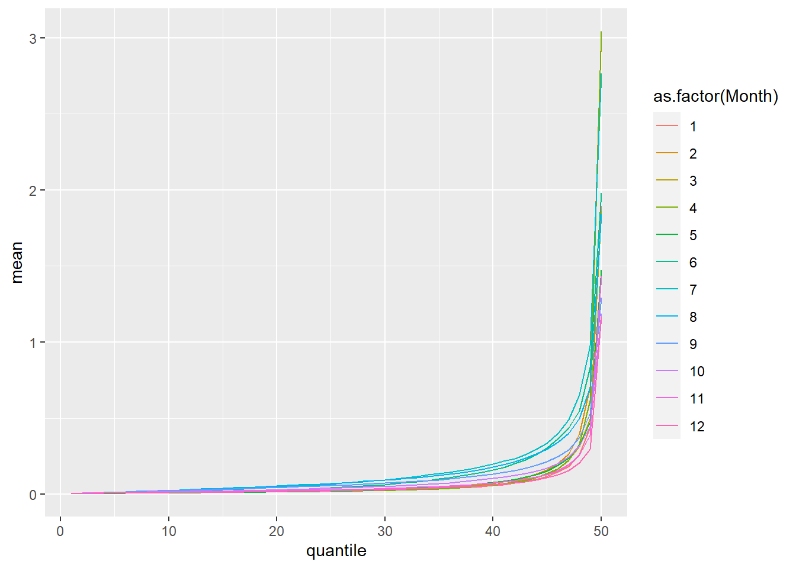
ggplot(test_mean, aes(x = Month, y = mean, color = as.factor(quantile))) + geom_line()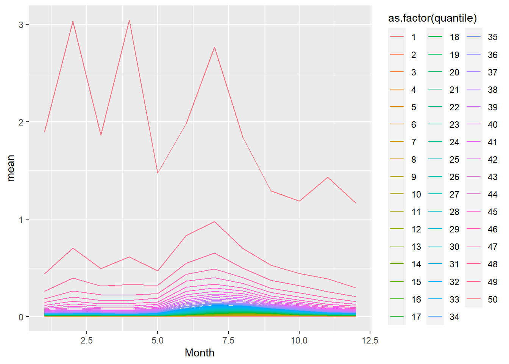
Change ratio
I could get the change ratio in a function, but a couple things jump out- I’d have to feed each scenario the baseline scenario and re-calculate it. And I’d lose the ability to gut-check the quantiles. So, let’s do it as a stepwise summarize - mutate
The “change ratios” defined
test_q <- testdf %>%
group_by(Month) %>%
# Get the quantiles and their means
summarise(across(starts_with('Sim'), get_qmean, .names = "{.col}")) %>%
# Clean up- unnest because each summary is a df of both q and m,
tidyr::unnest(cols = starts_with('Sim'), names_sep = '_') %>%
# only need one quantile column
rename(quantile = SimR0_quantile) %>%
select(-ends_with('_quantile')) %>%
# Get the change ratio
mutate(across(starts_with('Sim'), \(x) ((x-SimR0_mean)/SimR0_mean),
.names = "{.col}_cr"))`summarise()` has grouped output by 'Month'. You can override using the
`.groups` argument.test_q# A tibble: 600 × 18
# Groups: Month [12]
Month quant…¹ SimR0…² SimR1…³ SimR2…⁴ SimR3…⁵ SimR4…⁶ SimR5…⁷ SimR6…⁸ SimR7…⁹
<dbl> <int> <dbl> <dbl> <dbl> <dbl> <dbl> <dbl> <dbl> <dbl>
1 1 1 0.00434 0.00273 0.00308 0.00342 0.00376 0.00408 0.00439 0.00468
2 1 2 0.00500 0.00306 0.00346 0.00386 0.00426 0.00466 0.00507 0.00548
3 1 3 0.00563 0.00327 0.00375 0.00423 0.00473 0.00521 0.00573 0.00629
4 1 4 0.00619 0.00350 0.00404 0.00459 0.00514 0.00571 0.00626 0.00683
5 1 5 0.00655 0.00384 0.00435 0.00491 0.00544 0.00601 0.00660 0.00721
6 1 6 0.00690 0.00412 0.00462 0.00517 0.00576 0.00633 0.00697 0.00766
7 1 7 0.00735 0.00434 0.00488 0.00546 0.00610 0.00674 0.00745 0.00822
8 1 8 0.00787 0.00457 0.00515 0.00574 0.00646 0.00724 0.00797 0.00875
9 1 9 0.00841 0.00482 0.00543 0.00610 0.00687 0.00768 0.00850 0.00930
10 1 10 0.00890 0.00506 0.00573 0.00649 0.00727 0.00812 0.00901 0.00992
# … with 590 more rows, 8 more variables: SimR0_mean_cr <dbl>,
# SimR1_mean_cr <dbl>, SimR2_mean_cr <dbl>, SimR3_mean_cr <dbl>,
# SimR4_mean_cr <dbl>, SimR5_mean_cr <dbl>, SimR6_mean_cr <dbl>,
# SimR7_mean_cr <dbl>, and abbreviated variable names ¹quantile, ²SimR0_mean,
# ³SimR1_mean, ⁴SimR2_mean, ⁵SimR3_mean, ⁶SimR4_mean, ⁷SimR5_mean,
# ⁸SimR6_mean, ⁹SimR7_meanDoes that make sense that they’re negative through R5? Yes, that’s the no change in rain, but still increased PET. Rain doesn’t increase until R6 and 7.
Stacked
Do a bit of cleanup separate from the processing pipe
test_stack <- testdf %>%
mutate(sdl = stringr::str_extract(path, "SS[0-9]+")) %>%
select(sdl, Year, Month, Day, starts_with('Sim')) %>%
pivot_longer(cols = starts_with('Sim'),
names_to = 'scenario', values_to = 'runoff')test_q_s <- test_stack %>%
group_by(scenario, Month) %>%
# Get the quantiles and their means
summarise(qmean = get_qmean(runoff)) %>%
# Clean up- unnest because each summary is a df of both q and m,
tidyr::unnest(cols = qmean) %>%
ungroup()`summarise()` has grouped output by 'scenario', 'Month'. You can override using
the `.groups` argument.relfun <- function(x,y) {(x-y)/y}
# Use `werptoolkitr::baseline_compare` so we don't have to manually extract
test_q_s <- test_q_s %>%
group_by(scenario, Month) %>%
baseline_compare(compare_col = 'scenario', base_lev = 'SimR0',
values_col = 'mean',
comp_fun = relfun) %>%
ungroup() %>%
select(scenario = scenario.x, everything(),
change_ratio = relfun_mean,
-scenario.y)Adding missing grouping variables: `scenario`Plot
Just the means, then the change ratios
This will be easier stacked. I actually think the whole thing is likely easier stacked.
# just look at a couple quantiles
test_q_s %>%
filter(quantile %in% c(1,25,50)) %>%
ggplot(mapping = aes(x = scenario, y = mean, fill = as.factor(quantile))) + geom_col(position = position_dodge())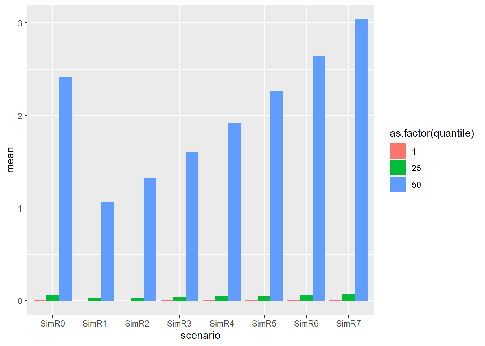
Probably want to look at different things on those dims
Do the quantiles look smooth
# just look at a couple quantiles
test_q_s %>%
ggplot(mapping = aes(x = as.factor(quantile), y = mean, fill = scenario)) + geom_col(position = position_dodge()) + facet_grid(Month ~ scenario)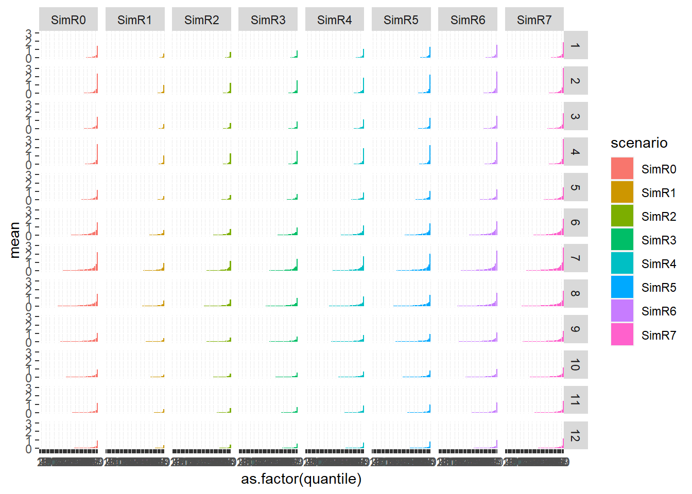
test_q_s %>%
ggplot(mapping = aes(x = quantile,
y = mean, color = scenario)) +
geom_line() +
facet_wrap('Month')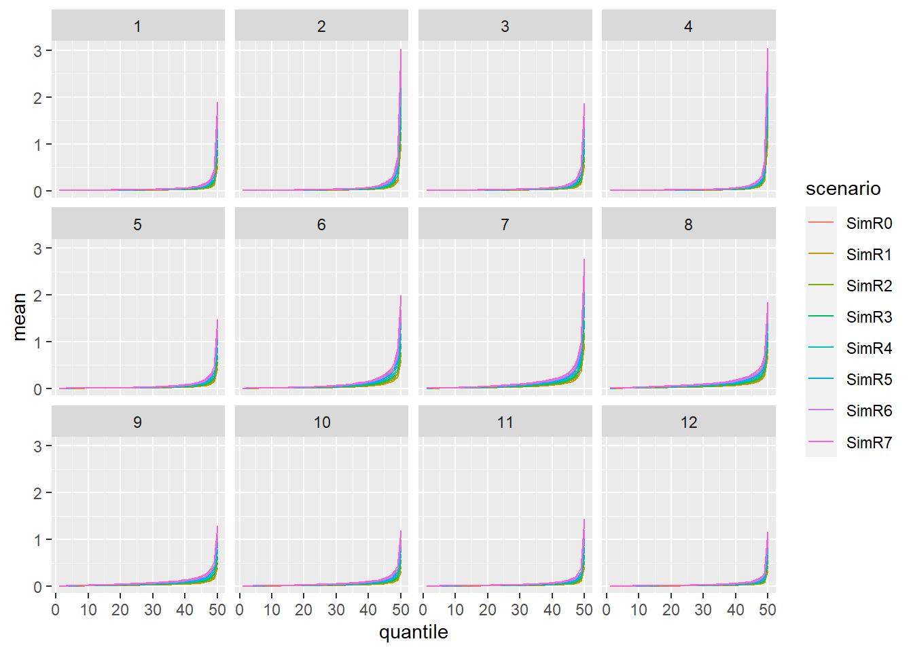
Test adjustment
orig_hydro <- readRDS(file.path(hydro_dir, 'extracted_flows.rds'))Just grab one for testing that’s flow, reasonably long, but not too long.
test_hydro <- orig_hydro[[25]]What’s the process here?
- find the quantile of each value in the orig_hydro data for each group-unit (e.g. Month)
- Not with
get_qmean, because we just want to identify quantile of each value, not summarise to their mean.
- Not with
- multiply by change ratio for each quantile, group-unit, and scenario
- do that over all the sdl units
find the quantiles for historical data
We don’t want get_qmean, but instead just want to ID the quantile of each value.
And we need to group
Write the function. I can probably do this above, and use it in get_qmean
get_q <- function(vals, q_perc) {
qs <- quantile(vals, probs = seq(0,1, q_perc), type = 5)
binvec <- cut(vals, qs, include.lowest = TRUE, labels = FALSE)
return(binvec)
}We need a grouping variable, been using Month, so stick with that for testing. means we need to create it. Obviously this could get more complicated
test_hydro <- test_hydro %>%
mutate(Month = lubridate::month(time))Now let’s find the quantile of each value
test_hydro_q <- test_hydro %>%
group_by(Month) %>%
mutate(quantile = get_q(value, q_perc = 0.02)) %>%
ungroup()Plot check
ggplot(test_hydro_q, aes(x = time, y = value, color = quantile)) +
geom_point() + geom_line() +
scale_color_viridis_c()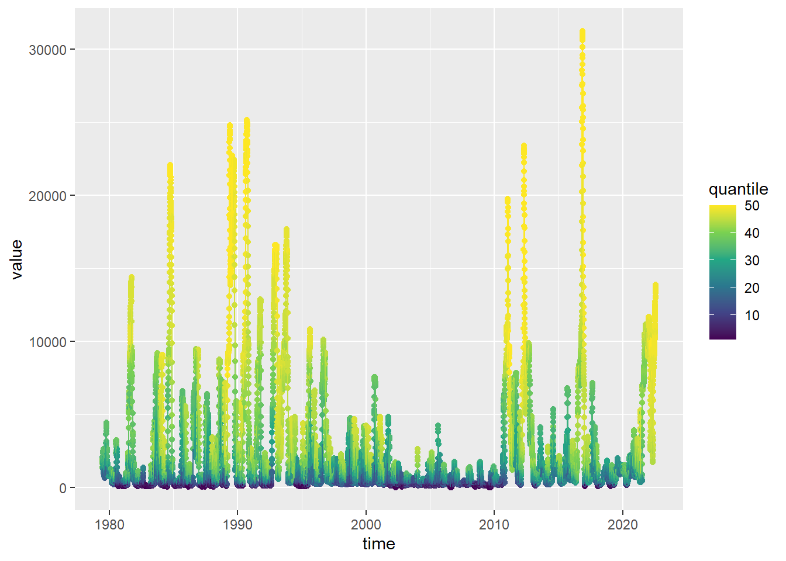
Looks right, but we can also check within months
ggplot(test_hydro_q, aes(x = lubridate::mday(time),
y = value, color = quantile,
group = lubridate::year(time))) +
geom_point() + geom_line() +
facet_wrap('Month') +
scale_color_viridis_c()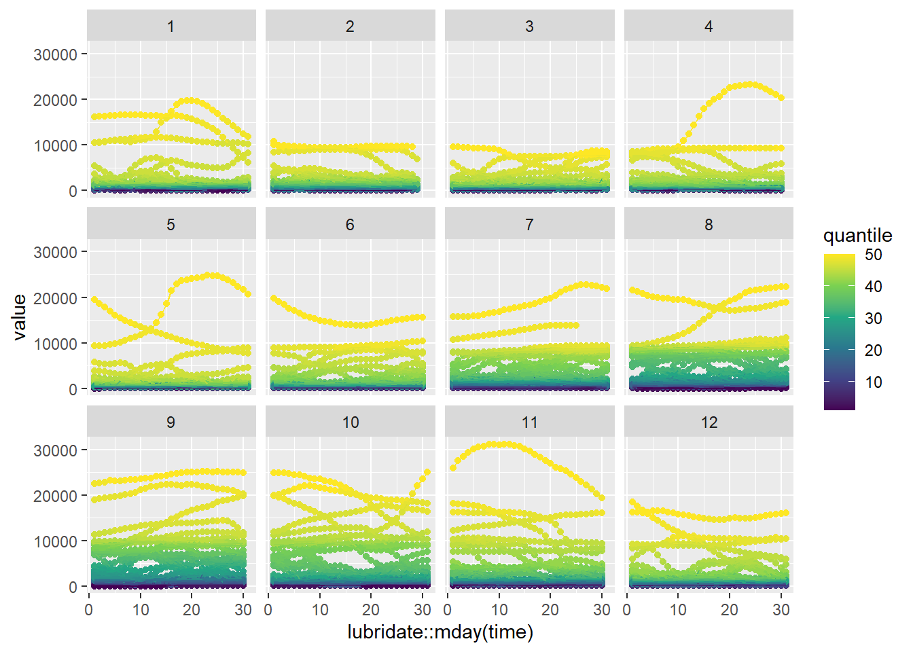
NEED A MATCH TO SDL UNIT STEP
I pair them up in flow_scaling.qmd, but that then gets lost by the time they’re here. Can we go back over there and keep it?
Do the shift
The multiple = all here is because otherwise it throws a warning that it duplicates rows x scenarios. That’s fine. But it might make more sense to do the scenarios as a list anyway, since they’ll get saved different places. Doesn’t matter right this instant.
test_hydro_q <- test_hydro_q %>%
left_join(test_q_s, by = c('Month', 'quantile'), multiple = 'all')Do the transform
All of this change ratio stuff is unnecessarily convoluted- just multiple F/H, don’t do this weird multiply then add thing. It’s exactly the same algebraically.
test_hydro_q <- test_hydro_q %>%
mutate(adj_val = (value*change_ratio + value))Plot check. too hard to see overplotted.
test_hydro_q %>%
filter(scenario %in% c('SimR1', 'SimR4', 'SimR7')) %>%
ggplot(mapping = aes(x = time, y = adj_val, color = scenario)) +
geom_point() + geom_line() +
scale_color_brewer(palette = 'Dark2') +
facet_wrap('scenario') + theme(legend.position = 'bottom')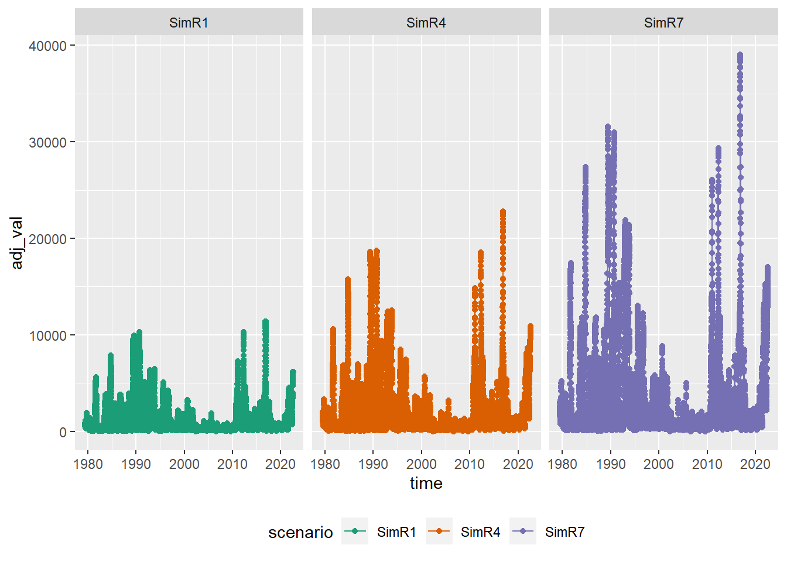
Format cleanup
I want to then separate the scenarios and save a version that’s just time, site, and adj_val, but with ‘site’ as the name. This makes a nested tibble, which we could then loop over to save.
thqs <- test_hydro_q %>%
# Just the needed cols
dplyr::select(scenario, site, time, adj_val) %>%
# pivot so the gauge name is col name
tidyr::pivot_wider(names_from = site, values_from = adj_val) %>%
# collapse to a list-tibble with one row per scenario
tidyr::nest(.by = scenario)Then I just need to write it out.
Question do I want to do this differently so I can more easily save gauges within scenarios? or just do them one at a time? I think the way the data works (e.g. coming in as single gauges and scenarios all together), it gets convoluted either way, really. I think keep it how it is, and if memory holds it all I could paste them together, otherwise save a million csvs. That might be better anyway given the different date ranges.
TODO
Plot check- Done
make that easy to use for adjusting the hyrdographs. Done, I think.
Run it over the full list of SDL units
settle on the grouping- use months
a version with long data- would it make more sense? Done, and I think yes
I’m curently doing the gauge pull, and then this. But does it make more sense to create the scaling dfs/lists here and save them, and then read them in and do the scaling over there? I think probably.
- Then, for example, we wouldn’t need to re-match to sdl units, we’d have the mapping there already in
geo_gauge, and could pull sdl from the gauge name.
- Then, for example, we wouldn’t need to re-match to sdl units, we’d have the mapping there already in
Testing
In the clean version, I’m getting a warning about list-columns and not-distinctly defined variables. It comes from duplicated data coming in from the API. I’ve cut out most of the hunting around to find the issue, but it’sworth keeping the issue itself here.
Re-pull- is it comign from the API?
re_dup <- get_ts_traces2(state = 'NSW',
site_list = '412036',
var_list = 141,
start_time = 'all',
end_time = 'all',
interval = 'day',
data_type = 'mean',
datasource = 'A',
returnformat = 'df',
.errorhandling = 'pass')Warning: executing %dopar% sequentially: no parallel backend registerednrow(re_dup)[1] 43891re_dup %>% distinct(time) %>% nrow()[1] 38686Yes. Why?
is there an obvious pattern? Yes, every day starting in 1990 to 2004-04-01.
duptimes <- re_dup$time[duplicated(re_dup$time)]
min(duptimes)[1] "1990-01-01 09:00:00 UTC"max(duptimes)[1] "2004-04-01 09:00:00 UTC"plot(duptimes)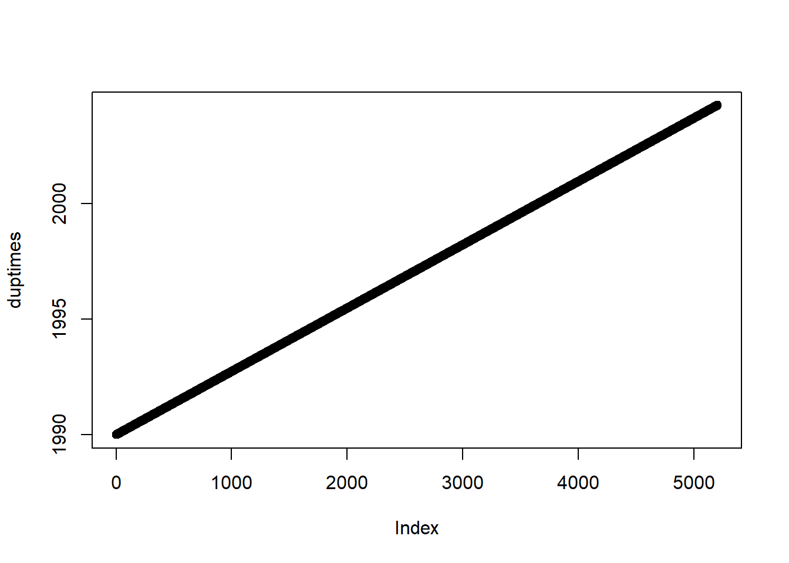
Are the values the same? e.g. can we just dump the dups?
dups <- re_dup %>%
dplyr::group_by(time) %>%
dplyr::filter(n() > 1) %>%
mutate(dupnum = row_number()) %>%
dplyr::arrange(time) # makes the comparisons easierQuite clearly not the same.
dups <- dups %>%
select(site, value, time, site_short_name, variable, dupnum, quality_codes, quality_codes_id)
dups# A tibble: 10,410 × 8
# Groups: time [5,205]
site value time site_short_…¹ varia…² dupnum quali…³ quali…⁴
<chr> <dbl> <dttm> <chr> <chr> <int> <chr> <int>
1 412036 1011. 1990-01-01 09:00:00 LACHLAN JEMA… 141.00 1 Not qu… 130
2 412036 1061. 1990-01-01 09:00:00 LACHLAN JEMA… 141.00 2 Not qu… 130
3 412036 1005. 1990-01-02 09:00:00 LACHLAN JEMA… 141.00 1 Not qu… 130
4 412036 1056. 1990-01-02 09:00:00 LACHLAN JEMA… 141.00 2 Not qu… 130
5 412036 899. 1990-01-03 09:00:00 LACHLAN JEMA… 141.00 1 Not qu… 130
6 412036 953. 1990-01-03 09:00:00 LACHLAN JEMA… 141.00 2 Not qu… 130
7 412036 796. 1990-01-04 09:00:00 LACHLAN JEMA… 141.00 1 Not qu… 130
8 412036 842. 1990-01-04 09:00:00 LACHLAN JEMA… 141.00 2 Not qu… 130
9 412036 692. 1990-01-05 09:00:00 LACHLAN JEMA… 141.00 1 Not qu… 130
10 412036 731. 1990-01-05 09:00:00 LACHLAN JEMA… 141.00 2 Not qu… 130
# … with 10,400 more rows, and abbreviated variable names ¹site_short_name,
# ²variable, ³quality_codes, ⁴quality_codes_idIt’s not just that they have different codes
table(dups$quality_codes)
Data Unavailable Not quality coded - subject to change
18 10392 ggplot(dups, aes(x = time, y = value, color = factor(dupnum))) + geom_point()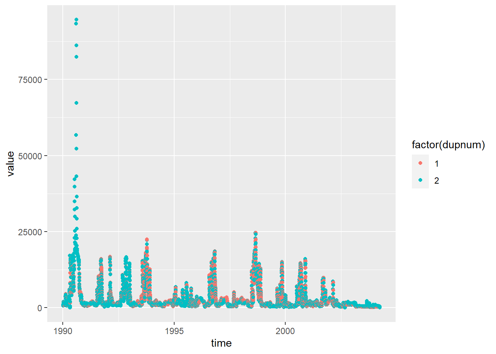
Is there a consistent difference between them
dupwide <- dups %>% pivot_wider(names_from = dupnum, names_prefix = 'dup_', id_cols = c(site, time, site_short_name, variable)) %>%
mutate(dupdif = dup_2-dup_1)ggplot(dupwide, aes(x = dup_1, y = dupdif)) + geom_point()
No obvious pattern to their relative difference.
ggplot(dupwide, aes(x = dup_1, y = dup_2)) + geom_point()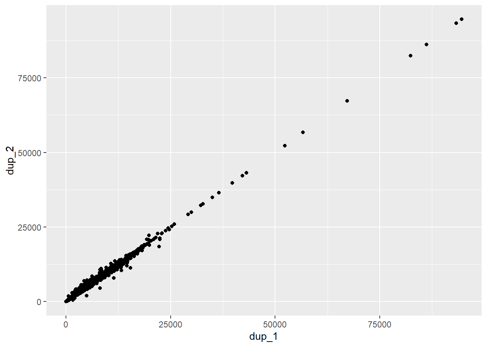
At least they both go up together?
If we re-pull only in that range, do we still get the issue?
re_dup_short <- get_ts_traces2(state = 'NSW',
site_list = '412036',
var_list = 141,
start_time = '19950101',
end_time = '19960101',
interval = 'day',
data_type = 'mean',
datasource = 'A',
returnformat = 'df',
.errorhandling = 'pass')Warning: executing %dopar% sequentially: no parallel backend registereddupshort <- re_dup_short %>%
dplyr::group_by(time) %>%
dplyr::filter(n() > 1) %>%
mutate(dupnum = row_number()) %>%
dplyr::arrange(time) # makes the comparisons easierDoes a different datasource fix it?
re_dup_short_cp <- get_ts_traces2(state = 'NSW',
site_list = '412036',
var_list = 141,
start_time = '19950101',
end_time = '19960101',
interval = 'day',
data_type = 'mean',
datasource = 'CP',
returnformat = 'df',
.errorhandling = 'pass')sum(duplicated(re_dup_short_cp$time))[1] 366No, still there. So, what to do? I think either throw out the gauge, or throw out one set of values.